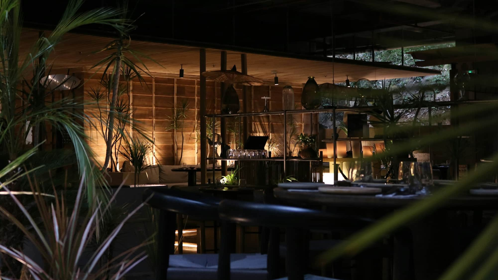
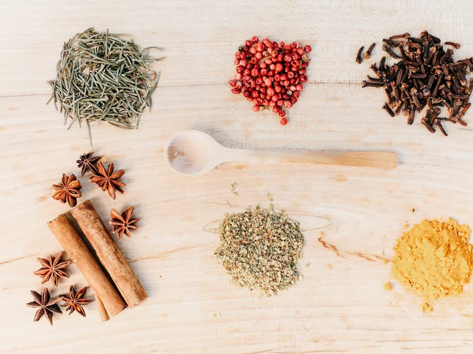
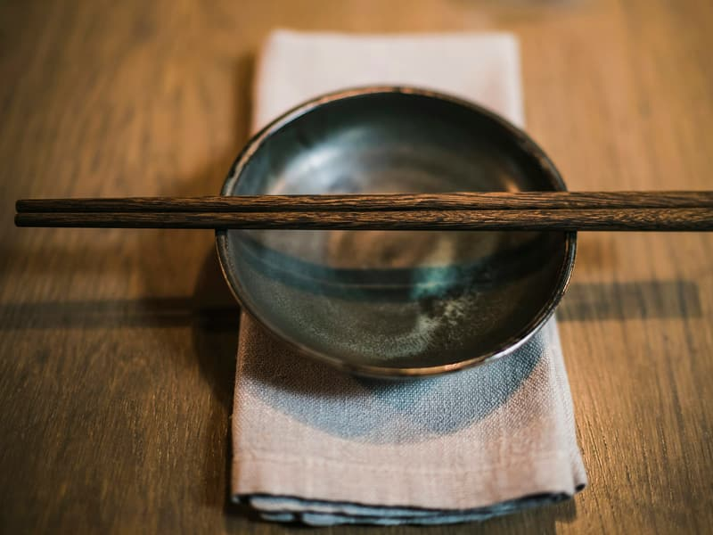
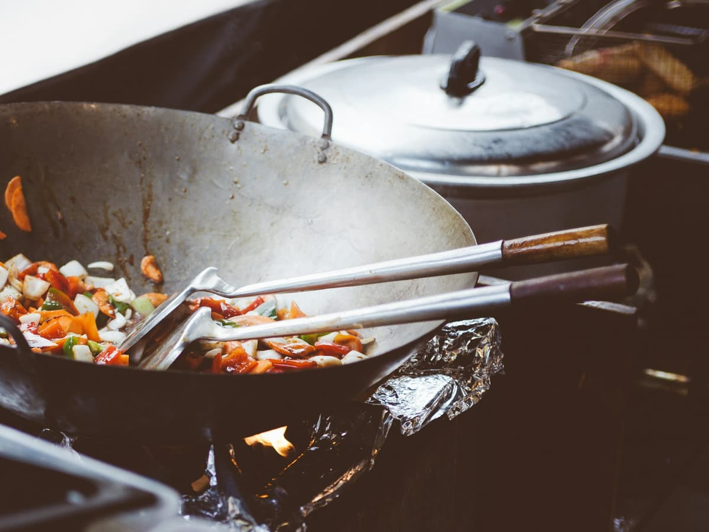

Your menu goes here
Dishes with names, descriptions and prices — exactly as you serve them. We fill this in together, once we have talked.
to be filled inAsian cuisine · Kielce
Viet-Thai in Kielce. Asian cooking made on the premises, a few minutes from the centre.




Illustrative photography under a free licence (Unsplash). Full list of photographers and sources: CREDITS.md.
About
Viet-Thai is at Bartosza Głowackiego 2 in Kielce. 495 reviews averaging 4.9 is a result earned one plate at a time.
All of that reputation currently lives on Facebook. Someone searching Google for Vietnamese food in Kielce does not reach your site, because you do not have one.
A site with the menu, the address and the phone number puts it in one place that belongs to you and that nobody has to scroll.

Opening hours
Hours still need confirming with the owner — the Google listing has none.
Table bookings and orders — the phone is fastest.